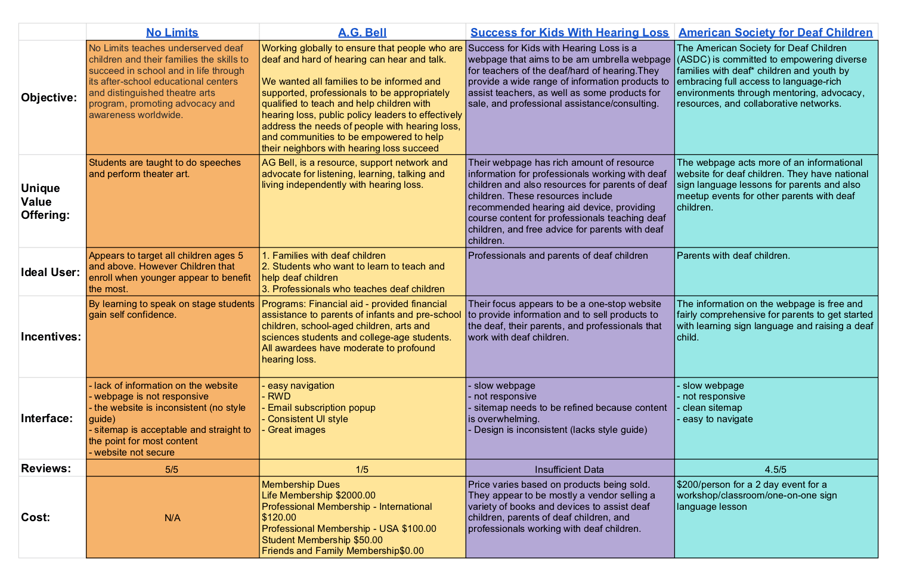
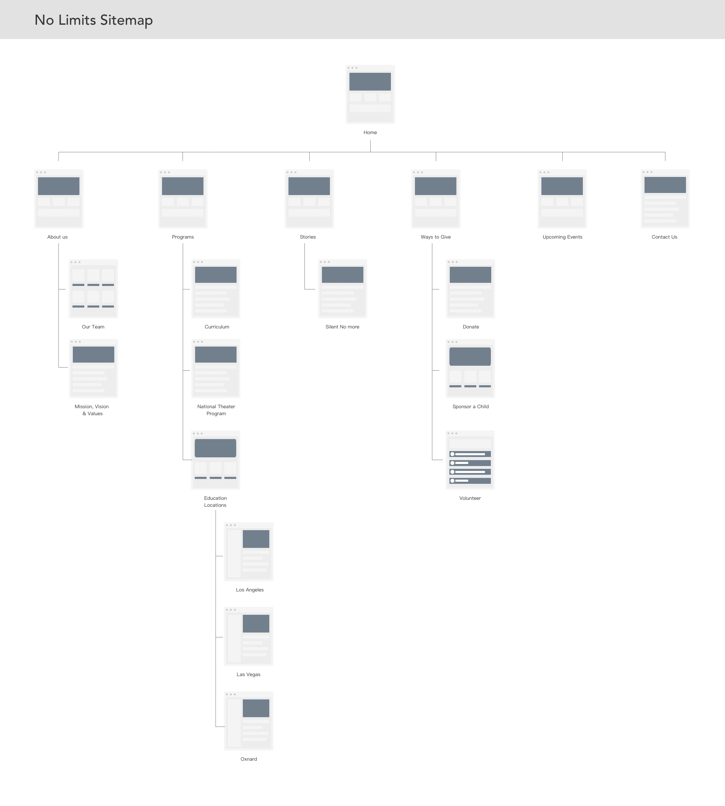
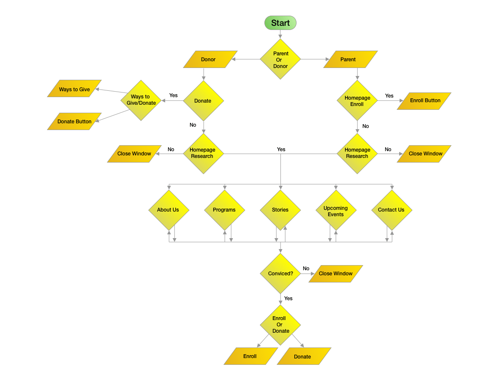
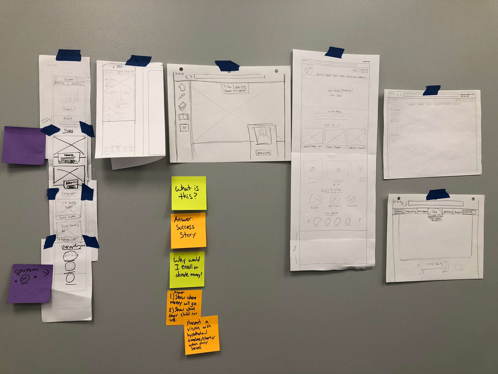
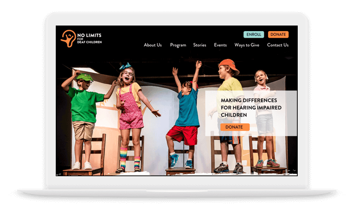
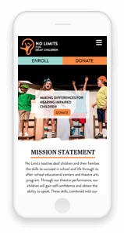

No Limits
Case Study Project
Overview
No Limits is a non-profit program for deaf children that
teaches children and their families the skills to succeed in school and life through its theatre
arts program for the deaf and after-school educational centers. The website however is flawed with
inconsistent layout, unresponsive, incoherent content, and lacked representation for program. Our
objective was to first research their program and webpage, perform a thorough study on their
audience, and revamp the website. Our design philosophy was to be able to quickly deliver the
mission, program overview, credibility, and achievements to the target audience. The goal is to
ultimately increase enrollment and donations to the program.
Role: UX Designer and UX Researcher
Tools: Pen + Paper, Sketch, Adobe Illustrator, & Invision
Problem
One of the first issue we found on the webpage is that it does not have any style guide. This was
apparent because the webpage has inconsistent font size, color scheme, & layout throughout the
webpage. It was also unresponsive so on mobile and tablet devices the webpage was almost unusable.
For example, some images and buttons would overlap each other and some texts or images were either
too small or too big; users had to constantly use the zoom tool on their browser. The content on
their webpage was also incoherent and did not clearly explain their program mission statement. We
had to rely on external resources such as news articles to really understand that No Limits was a
program built around the theater program. Finally, we noticed credibility was a big concern because
their webpage lacked data for their achievements and lack of testimonials.
Original Desktop View
Original Mobile View
After a thorough evaluation of their website, our UX hypothesis was that their website leads to
lower enrollment and fewer donation because the website does not clearly communicate their mission,
program overview, credibility, and achievements. Our strategy was to test this theory by performing
interviews, usability testing, and research reviews posted on 3rd party websites. Afterwards, we
will build a re-design based off our research.
Discover
Proto Persona
We believed that our primary audience was a parent that has a very busy schedule, concerned for
their deaf child’s future, looking for a deaf community, and looking for any resources available
that can improve the life of their child.

Researching Articles, Social Media, & User Reviews
For our research, we started off with researching articles and looking for any 3rd party websites
that could explain to us the achievements of No Limits. The reason we had to rely on these external
resources was because the information on their website was lacking and incoherent. In the beginning
we were also concerned based on how poorely they represented the program that this might have been
a scam. The only way we could know for sure was to seek out other resources.
Surprisingly, we found very positive news articles that reviewed and showcased No Limits. One
article that really shed light on this program was from
CNN
. It was only through their article and
interview that we really understood who the founder of No Limits was, her mission, her program’s
curriculum, and achievements. We were also able to finally find valuable data that adds credibility
to their program such as number of enrolled children, number of children graduated, and number of
sponsors. Surprisingly, we were also able to find famous alumni from the No Limits program like
John Autry, a deaf singer and actor from the TV series Glee.
We then proceeded with digging through their social media accounts like
Facebook
and
Instagram
to
see what sort of events and achievements they made. At this point we were not longer skeptical
about their program, but we still wanted to find more powerful resource we could use to showcase
their achievements on their website to encourage enrollments and donors. From this we found out
that a few years back that Jay Leno did a fundraising for No Limits theater performance! We were
shocked that such a valuable marketing opportunity like this was nowhere on their webpage.
Finally, we decided to wrap things up by researching the users. Since No Limits has been around for
over 22 years, we were pretty sure it was easy to find users writing reviews online for the
program. What we found was a nonprofit review website called
GreatNonProfits
. The reviews from the
parents and alumni was stellar! We tried to find any negative review on the program but couldn’t
find any after reading through every post. Our conclusion is the program is solid but the website
needs to reflect this. Reading through these reviews, we felt energized, positive, motivated, and
inspired. We wanted users on the website experience that too so we saved some powerful quotes that
we could later use as testimonials.
“No Limits I got my son out of the nonspeaking world. They are so dedicate to the kids and they
put
the best effort on each kid. Now he is talking and expressing more than ever.” – Mirna
“I was 5 years old, doing the theater program and speech therapy. Now I am 24 and No Limits
plays
such a huge role into my life overall as far as building up my confidence in my speech” –
Taylor
Wilson
“Here I feel hopeful, supported, validated and my daughter feels excited and happy!!” – Claudia
Alegria
“I truly believed Lexis speech and language was delayed due to her other disabilities and I can
tell you now I was wrong the problem was we were not given the right tools or program. NO
LIMITS
has helped Lexi to be successful” – Lisa Eng
User Interview
After validating that the No Limits program was perfect the way it was, we turned our focus to just
the website. It was obvious to us that the website was a complete mess. But to take a scientific
approach, we wanted to also prove our hypothesis was correct and perhaps there is something we
missed. So we proceeded with conducting user interviews and user testing for the website.
We interviewed 3 individuals. For each interview we started off with asking the user to briefly go
through the home page and asked them what they think the website is about and why. We then had them
briefly go to the “About Us” page and again asked them what they think of the website and why. Then
for the next 3 minutes we let the user freely browse through to the webpage and then asked them how
they felt about the website and what they thought was missing and why. We made the questions open
ended and broad because we did not want to influence their response and wanted the user to respond
with anything they could think. The key takeaway from the interview was,
1. Users knew this was a website about deaf children, but were not aware the program centered
aroundutilizing theater to teach deaf children to speak
2. They are confused and don’t know what No Limit really does
3. The navigation was incredibly confusing
4. Website color scheme and style is overwhelming
Click here to view source.
Competitive Analysis
After getting a strong understanding of the No Limits program and users, we proceeded with a
competitive analysis.

Define
User Persona
After completing our UX research, we felt we had a strong understanding of who our audience is so
we revised our user persona.
UX Scenario
Sara has a 6 years old deaf daughter. She is searching for a free or low-cost educational speech
therapy program for her daughter in their community. She searches for programs in her area via
Google and comes across No Limits.
She looks at the educational programs that No Limits offers and learns that No Limits is donation
and volunteer based nonprofit organization. She learns that No Limits offers an intuitive theater
program to help deaf children learn to speak, so she decides to enroll her daughter in the program.
Sara fills out the application form on the website and waits for a response.
Develop
Information Architect
Before re-designing the webpage, we first needed to first re-organize the entire sitemap. We
proceeded with card sorting because it was quicker for us try different hierarchy and to share our
ideas with other team members.

Decision Flow Diagram
We then created a decision flow diagram based on the persona of the parent and a donor. This
decision flow diagram helped us understand the user’s thought process while trying to navigate
through the webpage.

Deliver
Wireframes
After the sitemap and decision flow diagram was complete, each team member did a quick paper
wireframe for the desktop and mobile version. This allowed us to quickly collaborate and agree on a
wireframe before we started building it out on sketch. Sketch was then used to digitalize the
wireframe and we designed the groups and symbols in a way so that it reduced the timeframe to make
the high-fidelity prototype.
For our wireframe, one of the first thing we wanted to make sure showed on the top of the webpage
was a clear hero image followed by a mission statement. This would quickly answer the user’s “What
is this?” question. We believed our user’s second question would be “Why should I care?” and so we
proceeded with success stories and we wanted these stories to have a hook. So we put Jay Leno in
the front page of the website with stories about deaf children being able to speak and who they
are. The “who we are” would have personal stories of current student, alumnis, and faculty. We
wanted the user to feel it impacting them personally or something they can relate to. Then we
proceeded with one paragraph explaining the theater program and a second paragraph explaining
academic support. We then showed the user different ways they get involved. Finally, to show No
Limits has credibility, we ended it with showing a list of achievements and sponsors.

Style Guide
For our style guide we used orange as a primary color because it represents enthusiasm, happiness,
determination, success, and encouragement. These were all the feelings we felt when reading through
the user reviews and so we wanted to make sure this got captured in the design of the website. We
also used a 2 lighter shades of oranges because they complemented well with the bolder orange. The
darker violet and lighter teal then added a good contrast. For the iconography we wanted to use
universally understood symbols that represent non-profit; we used a lot of hand and heart symbols.
For the font, we used Abril (sarif) for the top heading and proceeded with Brandon (sans) for the
rest of the text. We chose these fonts because it gave a magazine feel. This was important because
we were designing the wireframe and content in a way that is best viewed if the user reads through
the website linearly. Since magazines have been traditionally read linearly, we thought
incorporating this into our design was ideal. Finally, for our logo re-design, we put a joyful
child with in the center and created the border based off the outline of an ear to represent the
deaf.
High Fidelity Prototype
Click the below images to see the prototype!

Desktop Version

Mobile Version